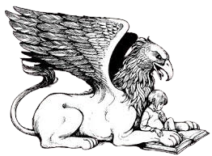
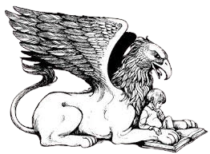

YEAR OF THE JUNGLE
 

A PUBLISHERS WEEKLY BEST BOOK OF 2013: PICTURE BOOK
65TH ANNUAL CHRISTOPHER AWARD FOR BOOKS FOR YOUNG PEOPLE
2014 CAPITOL CHOICES NOTEWORTHY TITLES FOR CHILDREN AND TEENS
A BOOKLIST EDITORS' CHOICE, 2013
2014 CHARLOTTE ZOLOTOW AWARD / HONOR BOOK
A NEW YORK TIMES EDITORS' CHOICE
A BULLETIN OF THE CENTER FOR CHILDREN'S BOOKS BLUE RIBBON BOOK FOR 2013
A 2014 GRYPHON HONOR BOOK
CCBC CHOICES 2014
BOOK LINKS LASTING CONNECTION FOR 2013
HUFFINGTON POST BEST PICTURE BOOKS OF 2013
MOST POWERFUL--HONORABLE MENTION
THE GUARDIAN/THE OBSERVER BEST PICTURE BOOKS FOR CHILDREN, 2013
A PARENTS' CHOICE SILVER HONOR AWARD RECIPIENT 2013
OPPENHEIM TOY PORTFOLIO PLATINUM AWARD WINNER 2013
"In this picture book, Collins sensitively examines the impact of war on the very young, using
her own family history as a template. Suzy is the youngest of four children—Proimos draws her
with impossibly big, questioning blue eyes and a mass of frizzy red hair—and she is struggling
to understand the changes in her family. "My dad has to go to something called a war," she
explains. "It's in a place called Viet Nam. Where is Viet Nam? He will be gone a year. How long
is a year? I don't know what anybody's talking about." When Suzy learns that her father is in
the jungle, she imagines something akin to the setting of her favorite cartoon (Collins suggests
it's George of the Jungle). As the months wear on, though, Suzy begins to piece together the
danger her father is in, whether it's through the increasingly unnerving postcards he sends (one
reads, "Pray for me," in closing) or by catching a snippet of wartime violence on the news.
"Explosions. Helicopters. Guns. Soldiers lie on the ground. Some of them aren't moving." In four
wordless spreads, Proimos makes Suzy's awakening powerfully clear, as the gray jungle she
initially pictured (populated by four smiling, brightly colored animals) gives way to a more
violent vision, as the animals morph into weapons of war. Just when Suzy's confusion and fear
reach an apex: "Then suddenly my dad's home." As in Collins's Hunger Games books, the fuzzy
relationship between fear and bravery, and the reality of combat versus an imagined (or, in the
case of those books, manufactured) version of it is at the forefront of this story. By the final
pages, Suzy has come to understand that "Some things have changed but some things will always be
the same." It's a deceptively simple message of reassurance that readers who may currently be in
Suzy's situation can take to heart, whether their loved ones return changed, as hers did, or
don't return at all. Ages 4–up."
--Publishers Weekly, STARRED REVIEW
"Suzanne Collins, author of the famously bloody "Hunger Games" trilogy, has written a
picture-book memoir about what life at home is like for a child whose father has gone away to
war. Collins's own father went to Vietnam the year she turned 6, and she's said the experience
had a profound effect on him. But though post-traumatic stress disorder is often spoken of these
days, the more subtle effects of war on the children of men and women serving abroad are less
well known. "Year of the Jungle" is narrated by a little red-haired girl named Sue, whose father
reads her poems by Ogden Nash. Her favorite is about a dragon named Custard that "keeps crying
for a nice safe cage." Sue thinks that while Custard "always feels afraid, he is really the
bravest of all. And that's what makes him special." When her father leaves for Vietnam, Sue must
follow Custard's example. The year "goes on and on." Sue waits. She measures the passing of time
by the arrival of a turkey, a Christmas tree, shamrocks and colored eggs. There is a postcard
with a picture of Saigon, then one with a picture of a Vietnamese fisherman. The children watch
their mother, worried she might be "going to the jungle, too," but she stays. Sue's initial
impression of the jungle is positive. Her "favorite cartoon character lives in a jungle," and
she thinks she'd like to go to Vietnam to find her father. She will fly there. "You can fly
anywhere in your dreams." But over the course of the year, the dream begins to darken. The
postcards stop coming. Then Sue's father sends her a birthday card when it isn't her birthday,
and she begins to realize that "the jungle must be a very confusing place" for her father to
have made "such a serious mistake." One day, she watches graphic footage of the war on
television, and her mother rushes in to turn off the set. Sue is afraid, but she doesn't have
the language to describe her fear. She hides in the closet to cry alone. While Sue is not able
to formulate her feelings in words, James Proimos's excellent illustrations capture her
confusion. In one image, Sue imagines the landscape of Vietnam as a place with green elephants
shooting white blobby monsters from their trunks and yellow goblins rising from coffee cups,
while a rhino-shaped helicopter floats overhead. This visual nightmare mirrors a child's skewed
perception of war so well that it is clear Sue is going through her own version of hell. At the
end of the year, Sue's father returns, "tired and thin," his skin "the color of pancake syrup."
He "stares into space. He is here but not here." "Some things have changed," Sue reflects, "but
some things will always be the same." In other words, bad things happen, but life goes on. "Year
of the Jungle" may take place in the late 1960s, but with more than 2.3 million Americans
deployed abroad between 2001 and 2012, the mixture of anxiety, excitement, fear, boredom and
confusion Sue experiences on the home front will be sadly familiar to many children. For them,
Collins's picture book may be a good tool to discuss the complex feelings war brings into a
household. Children are sure to ask why Sue's father went away, and why he was different when he
returned. Maybe some frank discussions about war, ones that involve more than stories about
courageous dragons, will help children better understand what military service entails. "Year of
the Jungle" brings up big questions. Parents will need to provide the answers ."
--The New York Times, Danielle Trussoni
"Suzanne Collins' autobiographical picture book, Year of the Jungle: Memories from the Home
Front, seems a sharp departure for the author of The Hunger Games, the best-selling dystopian
trilogy. But in a reassuring and deceptively simple way, Jungle, aimed at readers 4 and up,
continues Collins' exploration of the effect of war and violence on kids. In Hunger Games, for
readers 12 and up, teens are forced to kill or be killed as part of state-sponsored
entertainment. In Collins' first fantasy series, the Underland Chronicles, for readers 8 and up,
two kids fall into an underground world on the brink of war. Jungle (Scholastic), illustrated by
James Proimos,is narrated by Suzy, a frizzy-haired, big-eyed first grader whose dad is sent "to
something called a war" in a "place called Viet Nam." Suzy confesses, "I don't know what
anybody's talking about." When she hears Vietnam is a jungle, she thinks of a cartoon set in a
jungle where elephants and apes pal around. Reality intrudes when Suzy accidentally sees a TV
news report from Vietnam with explosions, guns and soldiers on the ground. "Some of them aren't
moving," she reports. Her worst fears are conveyed without words, just Proimos' paintings.
Suzy's dad returns home, just as Collins' own dad, an Air Force officer, did in 1968. Collins
offers no moralizing on war, just a vivid reminder of what it's like to be young and innocent in
a world that's not. I can see a lot of kids whose parents are in someplace called Afghanistan —
or another confusing place — identifying with Suzy."
--USA Today, Bob Minzesheimer, 3 1/2 OUT OF 4 STARS
"First-grader Suzy's father is in the jungles of Vietnam for a year. Through a tightly
controlled child's point of view, readers live the year with little Suzy in the sheltered world
her parents have built for her. She understands little at first, imagining romps in the jungle
with elephants and apes. Her father sends her postcards every so often with cheery scenes of the
tropics. Eventually, the postcards stop coming. She misses her dad, especially when her brother
takes over some of her father's duties, like reading the comics or Ogden Nash's poems to her.
One day, the wall of protection is broken by the television, with frightening visions of
explosions, helicopters, guns and dead soldiers. Her mother whisks her away, too late. Proimos'
ink-and-digital art, in his signature cartoon style, adds needed humor to a frankly scary story
that honors Suzy's experience and respects those who share it. Occasional full-page wordless
spreads allow readers to see into Suzy's mind, beginning with her flying through the jungle and
leading up to her post-epiphany anxiety about tanks and helicopters and rifles. With a notable
lack of patriotic rhetoric or clichés about bravery and honor, Collins holds firm to her
childhood memories, creating a universal story for any child whose life is disrupted by war.
Important and necessary. (Picture book. 4-10)."
--Kirkus Reviews, STARRED REVIEW
"Collins mines her own experience to tell a tender, personal story of war seen through a child's
eyes. Firstgrader Suzy's father is deployed to Viet Nam. At first, though she misses him, she
dreams of the exotic jungle. But as the year goes on, marked by Christmas trees and candy
hearts, things get harder. His postcards arrive less and less frequently, while news of the war,
and its real dangers, comes more and more often. In the end Suzy's father returns, and while
some things are different, some things are the same. Collins' unflinching g first-person account
details the fears and disappointments of the situation as a child would experience them. And
where more realistic illustrations would feel overwrought and sentimental, Proimos's flat,
cartoony drawings, with their heavy lines and blocky shapes, are sturdy and sweet, reflecting a
child's clear-eyed innocence. While small, personal details and specific references to Viet Nam
fix the story in one child's individual experience, it is these very particularities that
establish the kind of indelible and heartfelt resonance to be universally understood. Indeed,
children missing parents in all kinds of circumstances will find comfort here."
--Booklist, STARRED REVIEW
"This moving picture book recounts, through the author's eyes as a child, the year of her
father's military tour of duty in Viet Nam. The youngest of four kids growing up in a safe,
loving family, Suzy is first seen listening to her dad read Ogden Nash's poem about Custard, the
dragon who stays brave despite his inner fears. Thus the stage is set for her father's imminent
deployment. In this pre-Internet world, his postcards provide tenuous but tangible connections
as the first grader tries to comprehend what a jungle is, what her father is doing there, and
the passage of time ("Has it been a year yet?"). But Suzy's concerns increase when Dad confuses
her birthday with a sister's, and then the postcards cease. When one abruptly surfaces, Dad
signs it, "Pray for me." (She does, "very hard.") Television news and a near-drowning incident
during a swimming lesson feed the child's anxieties. Suddenly, Dad is home, "tired and thin… his
skin… the color of pancake syrup." Suzy struggles to articulate her harbored fears, which he
gently allays, and the two resume reading about Custard, whose stoicism surely resonates more
deeply for them. Vibrantly colored cartoon illustrations, outlined in thick black ink,
underscore a child's point of view. The characters' enormous eyes and boldly colored pupils
provide an arresting motif. Suzy's increasingly haunted imaginings, depicted on spreads of
painterly gray tones with bursts of color, stand in stark visual contrast to the narrative text
and illustrations framed by generous white space. The author's spot-on memories paired with
child-friendly art create a universal exploration of war and its effect on young children,
ideally shared with and facilitated by a sensitive adult."
--School Library Journal
"Collins, well known for her middle-school and YA fantasies, offers here a radical change of
pace in this picture book story inspired by her own childhood, documenting the year young Suzy's
father goes off to the Vietnam War. At first, the prospect doesn't sound all that bad to a
rising first-grader with little grasp of time; how long could one year be? Additionally, Dad is
headed for the jungle, and some of Suzy's favorite animals live (at least by her reckoning) in
the jungle. A year turns out to be a very long time, though, especially when postcards come only
sporadically, people's efforts at cheering her up only fill her with heretofore unconsidered
anxieties, and Dad's brief missives seem increasingly distanced and confused. Theirs is a
happy-ish ending—Dad does come home, although "he looks different. Tired and thin and his skin
has turned the color of pancake syrup. . . . He stares into space. He is here but not here."
Collins' text is simple, but it's rich in the telling details that establish the pervasive fear
("So many things are scary now") that spills over into other aspects of the little girl's
life—getting a birthday card from Dad that should have gone to her sister, being showered with
too much Halloween candy from a sympathetic neighbor, having a terrifying experience of being
tossed into a local swimming pool. Proimos' ink-lined, digitally colored illustrations are the
pitch-perfect tonal complement to Collins' narration, with the family portrayed as wide-eyed,
childlike cartoons that carry on with daily life in crayon-bright hues, while young Suzy's
angst-filled imaginings take shape in full-spread, full-bleed gray-tone scenes that twist her
innocent favorite animals into recurrent nightmarish motifs and symbols of war. With text and
illustrations that invite close reading, this will be a powerful title to share with children
well beyond picture-book age. EB"
--The Bulletin of the Center for Children's Books, STARRED REVIEW
"Hunger Games trilogy author Suzanne Collins reverts to her years writing for youth television
programming like Scholastic Entertainment's Clifford's Puppy Days for Year of the Jungle, her
latest book release for her youngest audience yet. To her, it's the perfect age for kids to
begin digesting the complicated concept of war. Suzy, the protagonist in the autobiographical
picture book, is based on a 6-year-old Collins and her family during the year her father was
deployed in Vietnam. Suzy refers to it as Viet Nam and envisions it as the "jungle," but what
appears as a picturesque backdrop in children's cartoons soon morphs into a terrifying place,
especially as images of the first televised war creep into her family's home. She begins to
understand where her father is, and why exactly he asks her to "Pray for me." For three years,
Collins thumbed through postcards and gifts her father gave her while he was overseas. "I felt
like there was a story here, but every time I tried to visualize the book, I drew a blank," says
Collins. "My fear was, with the subject matter, that the impulse would be to make the art dark
and very serious." Seasoned illustrator and close friend James Proimos captures childlike
fascination and fear when transforming the jungle from a home for friendly animals to a field
for frightening war tools. The book also reassures readers that despite any parent's absence,
their love for their children will never leave. "I hope people will read the book, even if they
don't have a deployed family member, even if they're not part of a military family," says
Collins. "Maybe it will help some kids understand what other kids might be going through if they
have a parent deployed overseas."
--The Hollywood Reporter
"YEAR OF THE JUNGLE is a moving, personal account of how it feels to have a parent off at war
when you're too young to understand what war means or how long a year is. Little Suzy is
confused and misses her dad terribly, delighting in his postcards and praying for his return,
and using her imagination to picture him in the jungle. She's also a regular, smiley kid with a
cat, two older siblings, and a friend she draws with. Collins deftly balances the fear and
freakout of a little girl who learns her dad's in danger with the upbeat, optimistic portrayal
of a kid going about the business of being a kid. James Proimos' cartoony illustrations are more
reassuring and funny than scary. But there's one imagined war scene (with images of guns, tanks,
airplanes, explosions), and he clearly expresses Suzy's fear and worry when her eyes get very
big, in one case filling nearly the whole page."
--Common Sense Media, 5 OUT OF 5 STARS
"In the last book of the "Hunger Games" trilogy, author Suzanne Collins offered a bleak vision
of war that felt personal. Now we know the source. In "Year of the Jungle" (Scholastic, $17.99,
ages 4 and older), Collins writes a child's-eye memoir of life during her father's tour in
Vietnam (with illustrations by James Proimos). Soldiers who go to war leave questions for
families to live with -- Where are they? What are they experiencing? Are they alive? -- and
children are experts at filling in gaps. The little girl hears her father is in the jungle, so
she imagines the jungle she knows from cartoons. The illustrations show how clues from the adult
world feed her worries. She is a thinker, and when her father arrives home, changed, she finds a
way to reach him."
--Newsday
"Year of the Jungle: Memories from the Home Front by Suzanne Collins, illustrated by James
Proimos (Scholastic £10.99), is an unusual, brave autobiographical experiment from the author of
The Hunger Games. It is about the year Collins's father was deployed to Vietnam when she was a
child. It's not sensational but nor does it evade the emotional issues involved. When "worried
ladies" (presumably friends of her mother's) tried to reassure her about her father – "your dad
will be just fine" – and gave her extra sweets, it had the unsurprising effect of making her
suddenly worried. Proimos ingeniously uses jungle pictures to illustrate her emotions. When her
father returns: "He is here but not here." Not an uncontroversial read yet not to be missed.
(5+)."
-- The Guardian/The Observer
"A masterful picture book excels at revealing a young child's experience during the year her
father is away at war. Suzy's dad has to go to a place called Viet Nam. She imagines flying in
the jungle—her favorite cartoon is set in a jungle—with her cat, Rascal. She is the youngest in
a family determined to shelter her from things she's not ready to understand. But they can't
protect her from good intentions. When she tells people her dad's in Viet Nam, they get worried.
At Halloween, "One of the worried ladies says, 'Your dad will be just fine,' and gives me way
too much extra candy. I start to feel worried, too." Over the year there are many unsettling
events. One of her dad's postcards says "Pray for me." He sends her a birthday card in winter,
but her birthday is in summer. She accidentally sees a news report about Viet Nam. "Later I hide
in the closet and cry." The postcards stop. Suzy's flights of imagination become darker, tainted
by fear she can't express. It's only when her dad returns that she can finally speak that fear,
if indirectly, when she tells him, "Rascal didn't think you were coming back." Suzanne Collins
mines her own childhood memories, transforming them with tremendous skill into a story that is
resonant and truthful and timeless and remarkably child-centered. James Proimos's illustrations
are stylistically simple but wisely executed, full of sensitivity and power and poignancy, along
with occasional moments of whimsy (that cat!)."
-- Cooperative Children's Book Center
.jpg)
"...a haunting autobiographical children's book about having a loved one go off to war."
--The Boston Globe
Selected Works
PICTURE BOOK
WHEN CHARLIE MCBBUTTON LOST POWER
"A clever, humorous story in rhyme"
--School Library Journal
SCI-FI
MOCKINGJAY
"...every bit as original and thought provoking, as The Hunger Games. Wow."
--Los Angeles Times
CATCHING FIRE
“...doesn’t disappoint when it segues into the pulse-pounding action readers have come to expect.” --Publishers Weekly, STARRED REVIEW
THE HUNGER GAMES
“...a superb tale of physical adventure, political suspense, and romance."
--Booklist, STARRED REVIEW
FANTASY
GREGOR THE OVERLANDER
“...readers will likely find [the Underland] to be a fantastically engaging place.”
--Publishers Weekly, STARRED REVIEW
GREGOR AND THE PROPHECY OF BANE
“Yessss!”
--Kirkus Reviews
GREGOR AND THE CURSE OF THE WARMBLOODS
“...immensely readable installment..."
--The Horn Book Magazine
GREGOR AND THE MARKS OF SECRET
"...will leave readers gasping..."
--Kirkus Reviews, STARRED REVIEW
GREGOR AND THE CODE OF CLAW
"...excellent acquisition for any library."
-VOYA
QUICK LINKS
Scholastic
Penguin Group
NPR
Listening Library
Indie Bound
Barnes & Noble
Books-A-Million
Amazon
Authors Guild